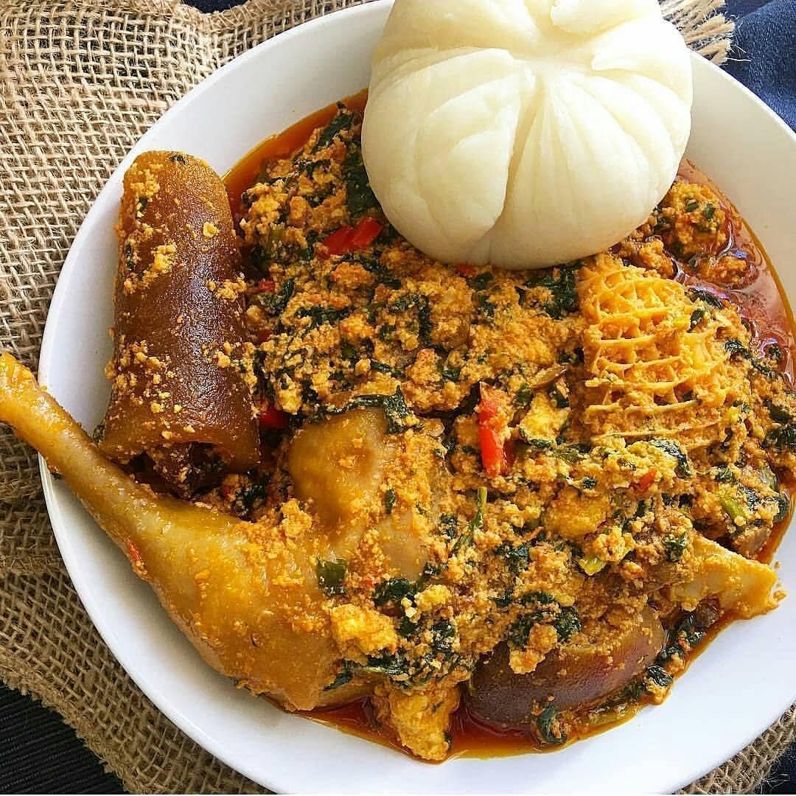

Egusi Soup

How To Cook Egusi Soup
Egusi soup is an exotic hearty food made from melon that will satisfy your taste buds. It is a
staple in most West African homes and this Egusi soup recipe is insanely delicious and easy to make
Ingredients
- Ground Melon
- Beef
- Someked Makerel
- Beef Seaning Cubes
- Vegetables
- Nigerian Pepper Mix
- Palm Oil
- Crayfish
- Kpomo
How To Cook Egusi Soup in Simple Steps
- Place a big pan on medium heat, add palm oil and heat for about 3 minutes (Do not bleach oil)
add the reserved chopped onions and Sautee till translucent
- Add pepper mix, locust beans and stir to combine. Bring to boil for 5 minutes.
- Add the egusi paste in bits to pepper, reduce the heat, do not stir and cover the pot with a lid.
Cook for another 10 minutes.
- Remove the lid, and gently stir the soup. The egusi would be lumpy at this point, use the back of a ladle to break
the lumps it into desired size/texture
- Add smoked turkey, ground crayfish and crayfish, beef stock (if using) and stir to combine. Add bouillon cubes,
taste and adjust accordingly. I didn’t add salt to this soup as the smoked turkey and mackerel already contained salt.
Continue to cook for another 10 minutes, check at intervals and stir to avoid burning if need be
- Add shredded smoked mackerel and gently stir into the soup. Add chopped spinach, stir to combine and cook for another
3 to 5 minutes. Take it off the heat, allow to cool for about 10 minutes before serving Serve and
enjoy with any Nigerian swallow of choice.